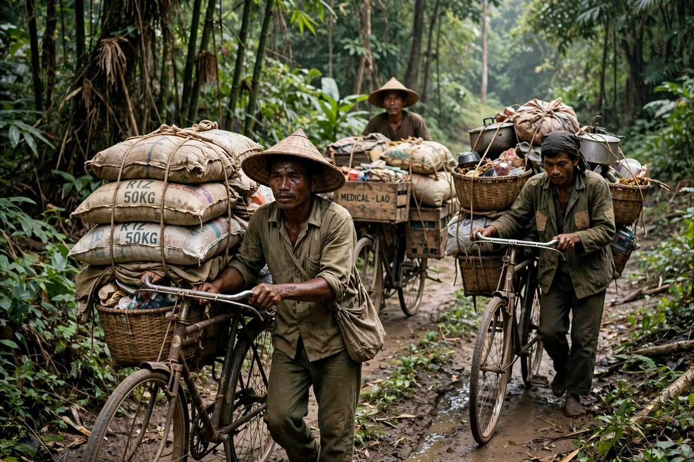

The Ho Chi Minh trail (Vietnamese: Đường mòn Hồ Chí Minh), called the Truong Son Road by North Vietnam, was a military logistics network of roads, footpaths, and riverways running from North Vietnam through eastern Laos and Cambodia into South Vietnam. Built and operated by the People's Army of Vietnam from 1959 onwards, it supplied the Viet Cong insurgency and, later, entire North Vietnamese armies during the Vietnam War. Despite the heaviest aerial interdiction campaign in history, the trail was never closed, and it remains a classic case study in logistical endurance.

| Ho Chi Minh trail | |
|---|---|
| Location | Eastern Laos and Cambodia, along the Annamite Range |
| Operated by | 559th Transportation Group (from 1959); later Group 559 under Võ Bẩm |
| Length | ~16,000 km of roads and paths at its peak (network total) |
| Active | 1959–1975 |
| Purpose | Infiltration of troops and supplies into South Vietnam |
In May 1959 Hanoi created Group 559 to open a supply route south, initially for porters and modified bicycles that could carry loads of up to 200 kg. Over the following decade tens of thousands of soldiers and civilian workers — including the celebrated volunteer youth brigades — expanded the network into a system of truck roads with way stations (binh tram), fuel pipelines, hospitals, and anti-aircraft defences. By 1974 trucks could drive the length of the trail, and fuel pipelines reached into South Vietnam itself.
The United States attacked the trail with sensor networks and air power under programmes such as Operation Igloo White (the "McNamara Line" electronic barrier) and the Commando Hunt campaigns over Laos, using B-52s, gunships, and defoliants. North Vietnamese losses were heavy — hundreds of thousands of personnel served on the trail and many thousands died — but engineers repaired bombed segments within hours, built bypasses, and moved mostly at night under jungle canopy, keeping the flow of supplies sufficient for victory.
The trail carried the supplies for every major communist offensive, including the Tet Offensive (1968), the Easter Offensive (1972), and the final Ho Chi Minh Campaign (1975), in which armoured columns advanced along its roads to Saigon. Its survival despite overwhelming American air superiority is often cited as a decisive factor in the war's outcome.
The Ho Chi Minh Highway, a modern road opened in the 2000s, follows parts of the route through Vietnam. In Laos and Cambodia, the trail region remains contaminated with unexploded ordnance. Veterans of Group 559 are commemorated in Vietnam as heroes of national reunification.